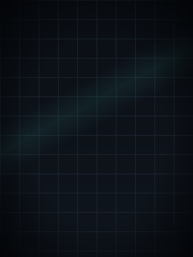

gen_bg.py 那套锚点（顶栏 y0–24 / 大环 (40,28)–(200,188) / 卡片 A、B y204–296 / 底栏 y304–320），
所以两页可以直接换成不同背景图（页 1 = 槽 0 bg-a、页 2 = 槽 1 bg-b —— 槽 1 一直是空的，正好用上 ✓）。
| 页 | 部件 | 像素框 | 值来源 | 动画（LVGL 能力内） | 脏区 px | 估算 ms / 33 ms |
|---|---|---|---|---|---|---|
| 1 | 顶栏文字 | (0,0)-(240,24) | 常量 | 不动 | - | - |
| 1+2 | lv_led（两页共用） | (210,7) 10x10 | AO beat（ledOn） | lv_led_on/off，跟板载 LED 同步闪烁（不再呼吸） | 100 | 0.1 / 每 500 ms 一次 |
| 1 | lv_arc | (40,28) 160x160 | edges 映射 0..100 | 值变时一次性重绘（160x160 ⇒ 34.8 ms，太贵不补间） | 25,600 | 34.8 / 105% |
| 1 | 大数字 | (80,84) 80x48 | 同上 | 文本替换（值变时） | ~3,800 | 4.6 / 14% |
| 1 | 单位 | (80,132) 80x16 | 常量 | 不动 | - | - |
| 1 | 卡 A 状态 | (12,204) 104x92 | ledOn | bg_color + text，走 lv_style_transition 200 ms | 9,568 | 11.5 / 35% |
| 1 | 卡 B 计数/帧时 | (124,204) 104x92 | edges + 自测帧时 | 文本替换 | ~2,000 | 2.4 / 7% |
| 1 | 进度条 | (16,302) 96x14 | beat 占空比 / 池占用（待定） | lv_bar_set_value(..., LV_ANIM_ON) | 1,344 | 1.6 / 5% |
| 1 | 页指示点 x2 | (112,309) | 当前页 | style transition（缩放/颜色） | ~200 | 0.2 / 1% |
| 2 | lv_arc → 环形/趋势 | (40,28) 160x160 | 总量/趋势数组 | 值变时一次性重绘（同页 1） | 25,600 | 34.8 / 105% |
| 2 | 大数字 + 单位 | (64,76) 112x38 | 总边沿数 | 文本替换 | ~4,000 | 4.8 / 15% |
| 2 | 卡 A 真值 | (12,204) 104x92 | uxTaskGetStackHighWaterMark / lv_mem_monitor（池占用） | 文本替换 | ~2,000 | 2.4 / 7% |
| 2 | 卡 B 帧时统计 | (124,204) 104x92 | UI 线程自测 min/max | 文本替换 | ~2,000 | 2.4 / 7% |
| 2 | 进度条 = 池占用 | (16,302) 96x14 | lv_mem_monitor | LV_ANIM_ON | 1,344 | 1.6 / 5% |
Splash(1.5 s, 槽 2) → 页 1（整帧 34.8 ms）→ N s / N 个边沿 → 页 2（整帧 ~46 ms）→ … → 回页 1。lv_obj_clean + 重建控件树 ⇒ 两页控件永不共存；背光已在首帧落定后点亮，切页不再动背光 ✓。
LV_USE_ARC 1 已开；lv_bar / lv_led / lv_label / lv_obj / lv_image 都是默认或已开；绘制注入（若要渐变填充）也只要核心功能。UI_BG_SLOT 从编译期常量改成"每页 entry 传入的槽号"（Ui_dispDemo(slot)），一行接口的事。